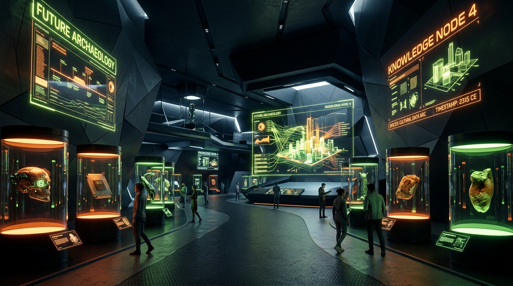
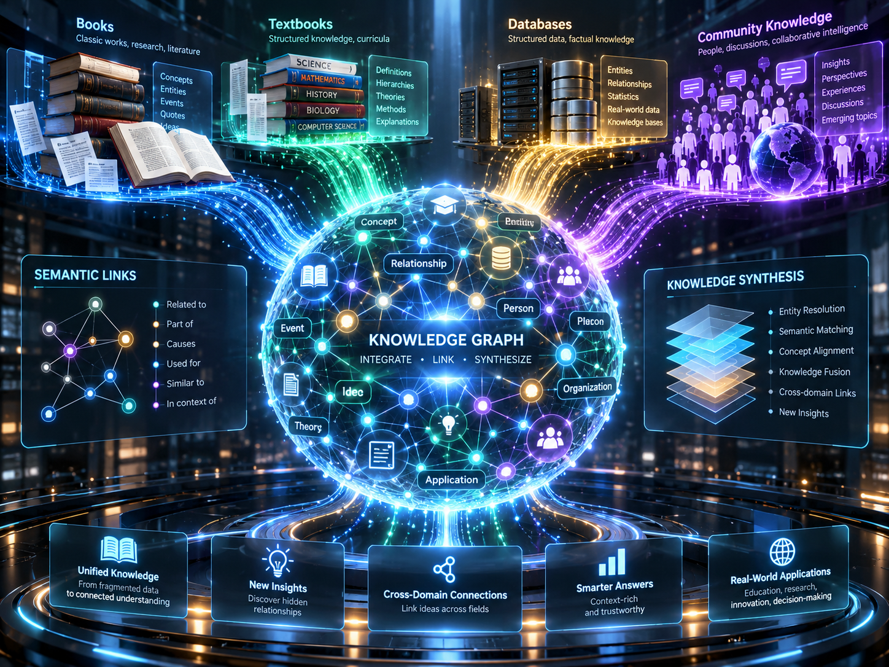
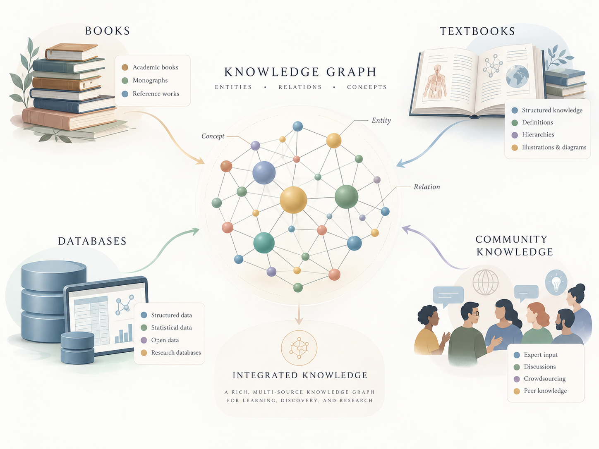
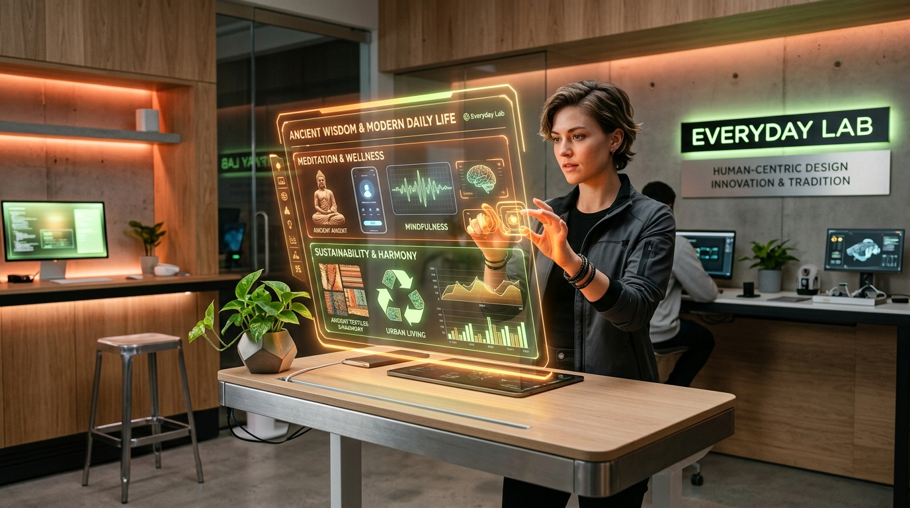

GRURU MUSEUM
การปะทะกันอย่างลงตัวของความนิ่งเรียบแบบ Modern Art Gallery กับความล้ำหน้าแบบ Sci-Fi Research Lab พร้อม 2 นวัตกรรมหลัก: Data Booming (ระเบิดความรู้แบบนำทาง) และ Interactive Knowledge Graph (แผนที่ความรู้ฉบับเต็ม)

น้ำท่วมทุ่งแต่ขาดน้ำดื่ม: ปัญหาสารสนเทศในยุคดิจิทัล
ตัวอักษรหนาแน่น เล่าแบบเชิงเส้น ขาดการเชื่อมโยงเชิงภาพ ผู้ใช้รู้สึกเหมือนกำลังถูกบังคับให้นั่งเรียน
- ใช้เวลาอ่านนานเกิน Attention Span สมัยใหม่
- ไม่บอกวิธีนำไปปรับใช้กับชีวิตประจำวัน
- สถาปัตยกรรมตัวอักษรไม่เป็นมิตรกับมือถือ
เสพไว เร้าใจ แต่ขาดความลึก ไม่บอกที่มา และเต็มไปด้วยข้อมูลเท็จหรือความเห็นส่วนตัว
- ไม่มีการตรวจสอบแหล่งอ้างอิง (No Provenance)
- ความรู้กระจัดกระจาย ไม่เชื่อมต่อกันเป็นระบบ
- ลืมง่าย ไม่เกิดคุณค่าระยะยาวในชีวิต
สนุกแบบแกลเลอรี ล้ำแบบไซไฟ มีหลักฐานตรวจสอบได้ทุกโหนด และจบด้วย Everyday Takeaway
- Interactive Knowledge Graph สำรวจได้เอง
- Specimen Label ระบุแหล่งที่มาและรหัสทุกชิ้น
- Built for Everyday Living ปรับใช้กับชีวิตจริงได้ทันที
“อดีตคือข้อมูล อนาคตคือเรื่องเล่า”
คลิกที่จุดต่าง ๆ ในตารางเพื่อเปรียบเทียบตำแหน่งทางการตลาด: GRURU ผสานความนิ่งของหอศิลป์สมัยใหม่เข้ากับความล้ำของห้องแล็บไซไฟ ทุกเรื่องเชื่อมกันเป็นเครือข่ายข้อมูลที่ตรวจสอบได้ และนำเสนอด้วยภาษาภาพที่จำได้ทันที
เจาะกลุ่มเป้าหมาย: คนรุ่นใหม่วัย 22–40 ปี
นักศึกษาจบใหม่ หรือ First Jobber ใช้มือถือเป็นหลัก ชอบภาพที่สวยงามและแชร์ต่อได้ทันที
นักออกแบบ มาร์เก็ตเตอร์ ครีเอเตอร์ นักพัฒนา ที่กำลังค้นหาแรงบันดาลใจและข้อมูลอ้างอิง
คนทำงานและพ่อแม่รุ่นใหม่ อยากรู้ที่มาของสิ่งรอบตัว เช่น สุขภาพ อาหาร และภูมิปัญญาโบราณ
ห่วงโซ่การสร้างมูลค่า: จากอดีตสู่อนาคต
สถาปัตยกรรมกราฟความรู้ & 6 หมวดเรขาคณิต






Data Booming: กราฟระเบิดความรู้แบบนำทาง
Interactive Knowledge Graph: แผนที่ความรู้ฉบับเต็ม
ต้นแบบคอมพิวเตอร์แอนะล็อกชิ้นแรกของมนุษยชาติ สะท้อนการคำนวณตำแหน่งดวงดาวด้วยเฟืองทด 37 ชิ้น
ระบบการออกแบบ: สุนทรียภาพแห่ง Future Archaeology
Built for Everyday Living: ภูมิปัญญาที่ใช้ได้จริง

หากตื่นกลางดึก อย่าเพิ่งหยิบมือถือ ให้ใช้ช่วงเวลา “Dorveille” 45 นาที ในการจดบันทึกไอเดียหรือฟังเสียงธรรมชาติ สมองจะหลั่งฮอร์โมนสร้างสรรค์สูงสุด
แผนการดำเนินงาน 4 รอบ & ความเร็วด้วย Antigravity
เซ็ตอัปโครงสร้าง Next.js + TypeScript + Tailwind CSS พร้อมแปลงสีเป็น CSS Variables
- ✓ บันทึก Workspace Rule ใน .agent/rules/
- ✓ ฟอนต์ Chakra Petch & IBM Plex
- ✓ ตรวจสอบ WCAG AA ใน Style Guide
สร้างคอมโพเนนต์การ์ดตัดมุม Specimen Grid และโมชันสแกนตัวอักษร 600ms
- ✓ การ์ด 45° Chamfer Polygon
- ✓ โมชัน Scan → Decode → Connect
- ✓ Specimen Label Template System
พัฒนาหน้า Home, Exhibitions, Data Booming, และ Everyday Lab ครบวงจร
- ✓ HALL 01 Exhibitions (Visual Stories)
- ✓ HALL 02 Data Booming Engine
- ✓ HALL 03 Everyday Lab Social Cards
ปรับแต่ง D3-force บน Canvas 50+ โหนด พร้อมระบบ Search และ Minimap
- ✓ ปรับแต่งความลื่นไหล 60 FPS บนมือถือ
- ✓ รองรับ Keyboard Navigation
- ✓ Soft Launch & Community Testing
สรุปการนำเสนอ & ข้อเสนอแนะเชิงกลยุทธ์
เริ่มต้นพัฒนา Design Tokens, Style Guide, และสเปก Knowledge Graph ร่วมกับ Google Antigravity เพื่อส่งมอบงานตามกรอบเวลา 8 สัปดาห์